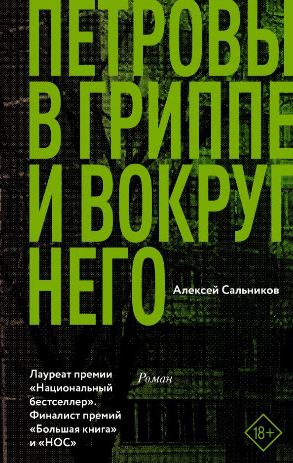
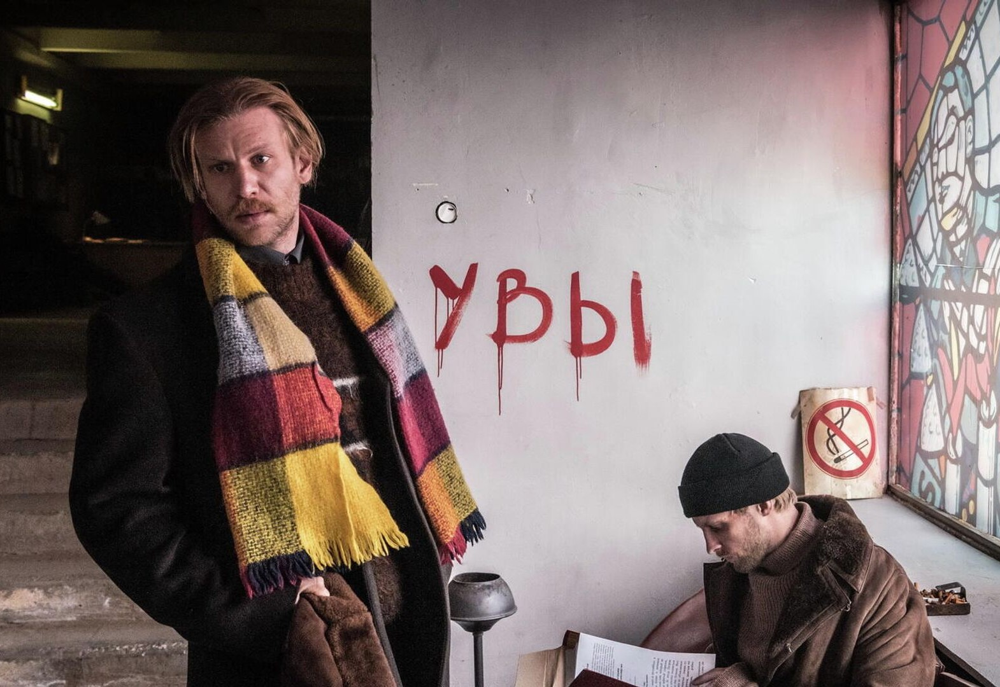
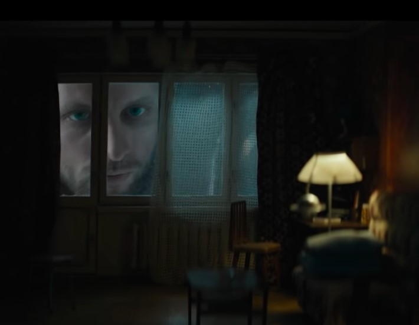
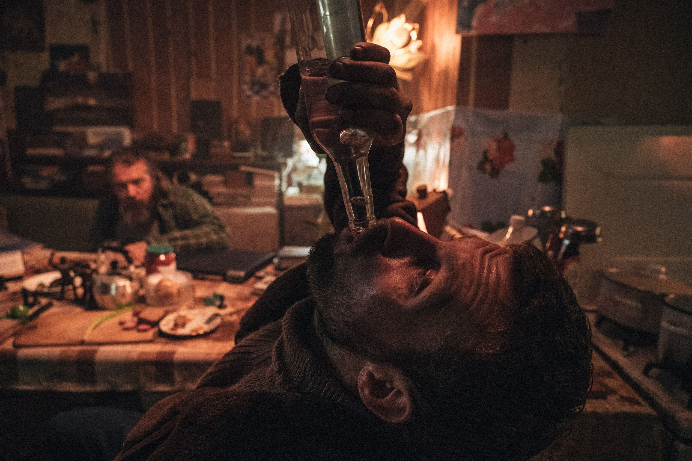
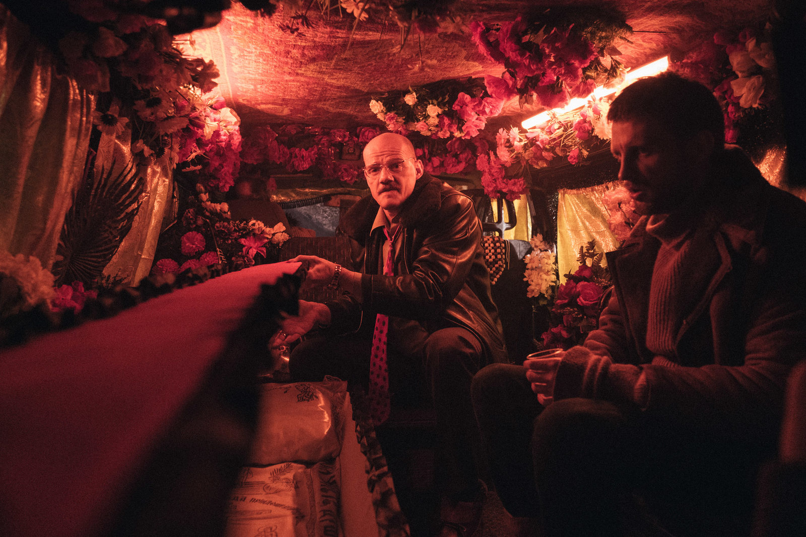
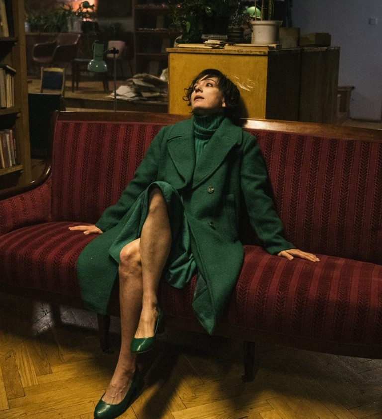

Петровы в гриппе


Сюжет:
Фильм рассказывает о нескольких днях жизни автослесаря Петрова и его семьи в постсоветском Екатеринбурге накануне Нового года. Петров — автослесарь, у которого есть любимое хобби: он рисует комиксы. Петров переносит на ногах грипп с высокой температурой, болеют его бывшая жена и сын. Возвращаясь с работы домой, Петров встречает своего старого приятеля Игоря, вместе с ним и его знакомыми пьёт водку. Гриппозное состояние Петровых не позволяет им отличить горячечный бред от действительности. Бред, действительность, воспоминания детства и молодости Петровых настолько реальны и абсурдны одновременно, что неотличимы друг от друга ни для героев, ни для зрителей. За обычными бытовыми хлопотами Петровых стоит сложная концептосфера: сюжет наполнен аллюзиями на древнеримскую и древнегреческую мифологию, у всех героев угадываются мифологические прототипы.

Кратко:
Художественный фильм режиссёра Кирилла Серебренникова совместного производства России, Франции и Швейцарии, экранизация романа Алексея Сальникова «Петровы в гриппе и вокруг него».
Главные роли в нём сыграли:
- Семён Серзин
- Чулпан Хаматова
- Иван Дорн
Награды и признание
- Приз за лучшую режиссуру на Каннском кинофестивале 2021
- Номинация на "Золотую пальмовую ветвь" в Каннах
- Приз зрительских симпатий на кинофестивале в Торонто


